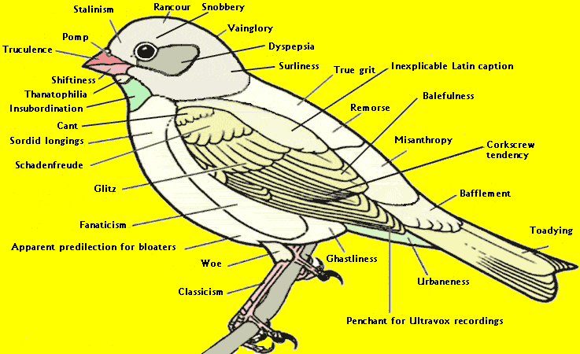

Saturday, January the 24th, 2009
back to: title, date or indexes
Given that this weekend sees the RSPB's Big Garden Birdwatch 2009, I thought it would be helpful to repost these two diagrams from the Hooting Yard archives, giving readers some idea of what to look out for, in their gardens, through their binoculars, this weekend. (Click to see the diagrams a bit bigger.)
